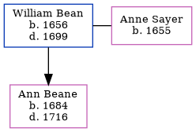

William Bean 1656 - 1699
[ Home ] | [ Calendar ] | [ Surnames Index ] | [ Census Index ] | [ Family History ]William Bean, the 8 times great-grandfather of Nigel Horne, was born in Nonington, Kent, England in 1656 and married Anne Sayer (with whom he had 1 child, Ann) in Canterbury, Kent, England on Oct 2, 1675.
He died in 1699 in Kent1 and was buried there on Jan 29, 16991.
Children
- Ann was born in 1684
Citations
- Kent, England, Tyler Index to Parish Registers, 1538-1874 Online publication - Provo, UT, USA: Ancestry.com Operations, Inc., 2010. This collection was indexed by Ancestry World Archives Project contributors.Original data - Frank Watt Tyler. The Tyler Collection. Canterbury, Kent, England: The Institute of Herald
Family Tree
Generated by ged2site. Last updated on Jun 11, 2024